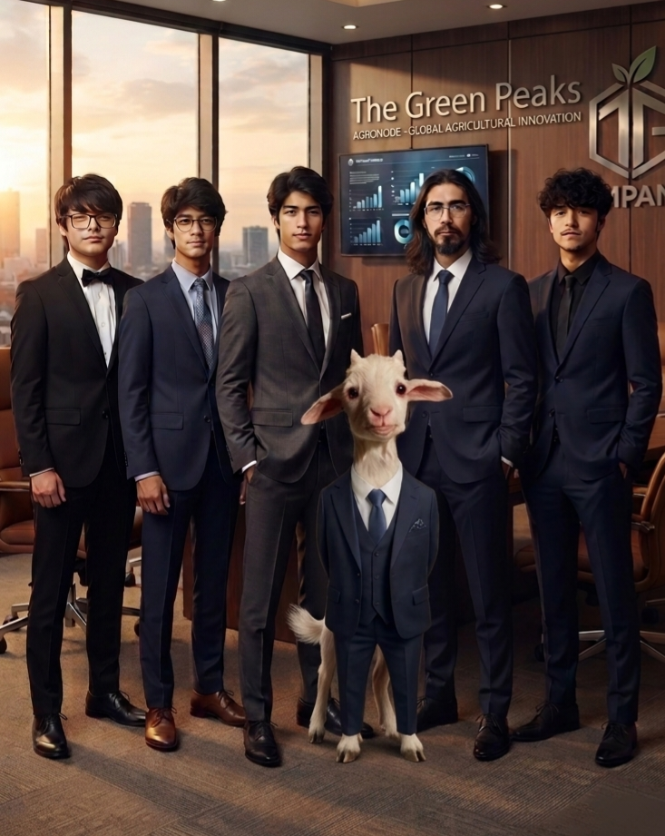

Nacidos en el corazón agrícola de Chile para resolver problemas reales del campo con tecnología accesible.
En The Green Peaks, creemos que la tecnología agrícola de punta no debería ser un privilegio exclusivo de las grandes corporaciones multimillonarias. Nos dedicamos a diseñar hardware modular y algoritmos de Inteligencia Artificial que permitan a medianos y pequeños agricultores proteger sus plantaciones contra amenazas críticas como el pulgón.
Nuestra filosofía se basa en la optimización de recursos: usar componentes eficientes como el ESP32 y arquitecturas diferenciales para multiplicar el área de monitoreo reduciendo los costos de implementación a menos de la mitad del estándar del mercado.

Las zonas rurales de Chile enfrentan constantemente dos grandes limitaciones: la conectividad deficiente e inestable y los altos costos operativos para implementar tecnología agrícola moderna. Estas barreras dejan vulnerable la producción de pequeños y medianos agricultores frente a eventos climáticos y plagas destructivas.
Para superar la falta de señal móvil en el terreno, hemos desarrollado una red local autónoma interconectada mediante Bluetooth BLE. Este enfoque elimina la dependencia de costosas suscripciones celulares en cada punto de control, permitiendo transferir datos críticos de manera estable y continua sin elevar el gasto energético.
Nuestro sistema se compone de una unidad AgroNode Central conectada a múltiples nodos Satélite distribuidos estratégicamente por la parcela. Cada nodo incorpora sensores de humedad de suelo que registran la condición hídrica precisa del terreno, enviando lecturas constantes a la central para alertar de forma preventiva.
Al democratizar el acceso a la telemetría en Chile, permitimos que los agricultores tomen decisiones fundamentadas en tiempo real. Esto se traduce en una reducción drástica del uso innecesario de plaguicidas, un consumo eficiente del agua de riego y una mayor protección del rendimiento de cada cosecha sin comprometer el presupuesto del productor.